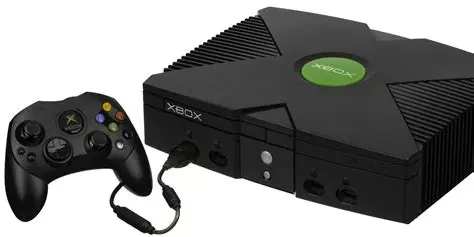
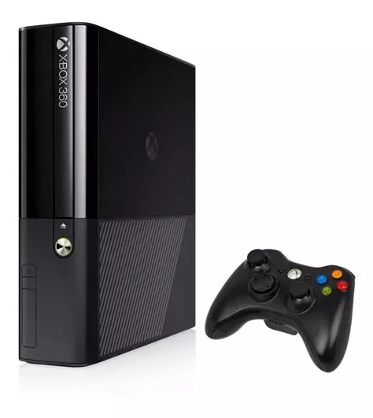
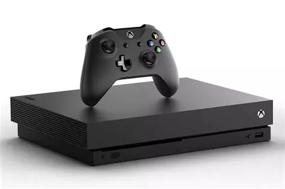
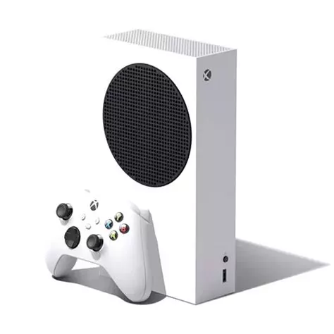
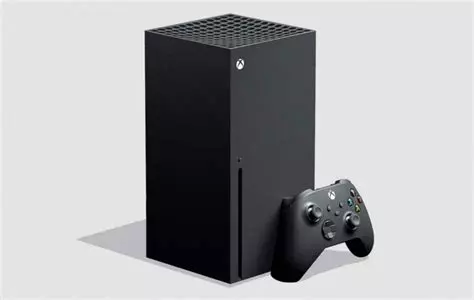

La première Xbox, également connue sous le nom de Xbox Classic ou Xbox 1, a été lancée par Microsoft le 15 novembre 2001 en Amérique du Nord. Elle a été la première incursion de Microsoft dans le marché des consoles de jeux vidéo, concurrençant les géants établis comme Sony (PlayStation 2) et Nintendo (GameCube). La Xbox était équipée d'un processeur Intel Pentium III modifié, d'un GPU NVIDIA et de 64 Mo de RAM. Elle a introduit le support du jeu en ligne via le service Xbox Live, une caractéristique révolutionnaire à l'époque. De plus, elle avait un lecteur de DVD intégré, ce qui en faisait une option attrayante pour les joueurs et les amateurs de multimédia. Certains des jeux les plus emblématiques de la Xbox incluent "Halo: Combat Evolved", "Fable", "Ninja Gaiden", "Star Wars: Knights of the Old Republic", et bien d'autres. Bien que la Xbox ait eu du mal à rivaliser avec la popularité de la PlayStation 2 de Sony en termes de ventes, elle a posé les bases pour la franchise Xbox, qui est devenue une partie importante du marché des consoles de jeux vidéo.
La Xbox 360 est la deuxième console de jeux vidéo développée par Microsoft, succédant à la Xbox originale. Elle a été lancée le 22 novembre 2005 aux États-Unis, avec des lancements ultérieurs dans d'autres régions du monde. La Xbox 360 a connu un succès significatif et a contribué à établir Microsoft en tant que concurrent majeur sur le marché des consoles de jeux vidéo. La Xbox 360 était équipée d'un processeur triple cœur PowerPC développé par IBM, et d'un GPU conçu par ATI (plus tard acquis par AMD). Elle offrait des graphismes améliorés et une puissance de traitement supérieure par rapport à sa prédécesseure, ce qui lui permettait de prendre en charge des jeux plus avancés sur le plan graphique. Parmi les caractéristiques notables de la Xbox 360, on trouve le service Xbox Live, qui permettait aux joueurs de jouer en ligne, de télécharger des jeux, des extensions et des contenus multimédias, ainsi que de communiquer avec d'autres joueurs. La Xbox 360 était également compatible avec les DVD et disposait d'un disque dur amovible pour le stockage de jeux, de profils de joueur et d'autres contenus. Des jeux emblématiques de la Xbox 360 incluent "Halo 3", "Gears of War", "Mass Effect", "BioShock", et bien d'autres. La Xbox 360 a été une console très populaire, bien que sa longévité ait été marquée par des problèmes de fiabilité tels que les fameuses "lumières rouges de la mort" (RROD). Malgré ces problèmes, la Xbox 360 a été un grand succès commercial et a contribué à asseoir la présence de Microsoft dans l'industrie du jeu vidéo.
La Xbox One est la troisième console de jeux vidéo développée par Microsoft, succédant à la Xbox 360. Elle a été annoncée pour la première fois le 21 mai 2013 et lancée le 22 novembre 2013 dans plusieurs régions du monde. La Xbox One était destinée à offrir une expérience de divertissement tout-en-un, combinant jeux vidéo, divertissement multimédia et fonctionnalités sociales. La Xbox One était équipée d'un processeur AMD à huit cœurs, d'un GPU AMD, de 8 Go de RAM DDR3 et d'un disque dur interne pour le stockage des jeux et des données. Elle offrait également des fonctionnalités de lecture Blu-ray et de streaming multimédia, ainsi qu'une intégration étroite avec le service Xbox Live pour le jeu en ligne et les interactions sociales. Une caractéristique notable de la Xbox One était le capteur Kinect, qui était initialement inclus avec chaque console. Kinect permettait aux utilisateurs de contrôler la console par des gestes, des commandes vocales et des mouvements du corps, offrant une expérience de jeu plus immersive et des fonctionnalités de divertissement interactives. Cependant, au fil du temps, Microsoft a adapté sa stratégie en retirant le Kinect de l'emballage standard pour réduire le coût de la console. Malgré cela, la Xbox One a continué à proposer une large gamme de jeux, des services en ligne robustes via Xbox Live, ainsi que des fonctionnalités multimédias étendues. Certains des jeux emblématiques de la Xbox One incluent "Halo 5: Guardians", "Forza Horizon 4", "Gears of War 4", "FIFA 20", et bien d'autres. Bien que la Xbox One ait eu une concurrence féroce avec la PlayStation 4 de Sony, elle a quand même connu un succès significatif et a continué à élargir la présence de Microsoft dans l'industrie du jeu vidéo.
La Xbox Series S est une console de jeux vidéo de huitième génération développée par Microsoft, faisant partie de la même génération que la Xbox Series X. Elle a été annoncée pour la première fois le 8 septembre 2020 et lancée le 10 novembre 2020 aux côtés de la Xbox Series X. La Xbox Series S est une console plus petite et moins chère que la Xbox Series X, mais elle offre toujours des performances de jeu de nouvelle génération. La Xbox Series S est conçue pour offrir une expérience de jeu en résolution 1440p à 60 images par seconde, avec la capacité de prendre en charge la technologie de rendu en 4K pour la lecture vidéo. Elle est équipée d'un processeur AMD Zen 2 personnalisé, d'un GPU RDNA 2 personnalisé, de 10 Go de RAM GDDR6 et d'un SSD interne de 512 Go pour le stockage des jeux et des données. La Xbox Series S est également compatible avec les jeux Xbox One, offrant une rétrocompatibilité étendue avec les titres précédents. De plus, elle prend en charge les fonctionnalités de ray tracing, de taux de rafraîchissement variable (VRR), et de latence ultra-faible pour une expérience de jeu fluide et réactive. Bien que la Xbox Series S soit moins puissante que la Xbox Series X, elle offre toujours une expérience de jeu de haute qualité à un prix plus abordable, ce qui en fait un choix attrayant pour les joueurs qui recherchent une console de nouvelle génération sans le budget nécessaire pour la Xbox Series X.
La Xbox Series X, lancée par Microsoft en novembre 2020, incarne l'aboutissement des avancées technologiques dans le domaine du jeu vidéo. Dotée d'un processeur sur mesure et d'un stockage SSD ultrarapide, elle offre des performances de pointe, des temps de chargement réduits et des graphismes époustouflants grâce au ray tracing en temps réel. L'accent mis sur la rétrocompatibilité permet aux joueurs de profiter d'une vaste sélection de jeux Xbox One, Xbox 360 et Xbox originaux, souvent améliorés pour tirer parti du matériel de la Series X. Associée au service Xbox Game Pass, qui offre un accès à une large bibliothèque de jeux, la console offre une expérience de jeu riche et diversifiée. Son design distinctif en forme de tour, accompagné d'une manette sans fil ergonomique et de nombreux accessoires compatibles, offre aux joueurs une expérience de jeu complète et immersive, propulsant ainsi la Xbox Series X au rang de référence incontournable pour les passionnés de jeux vidéo.
